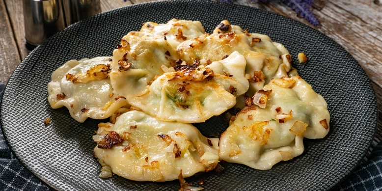
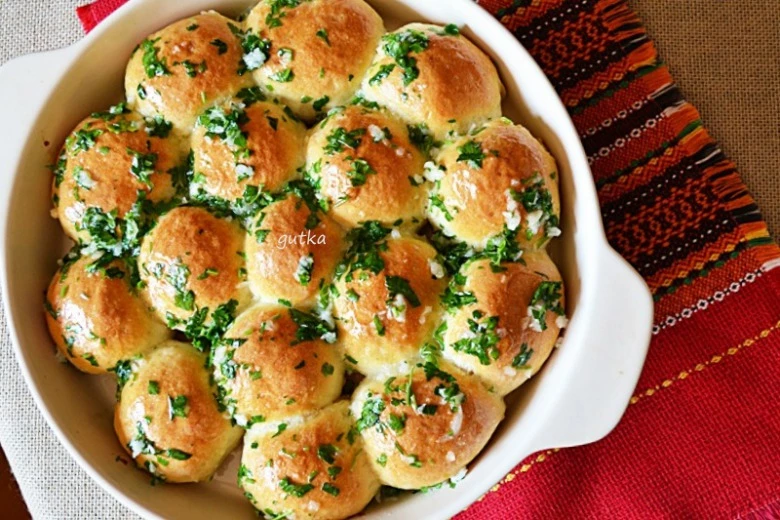
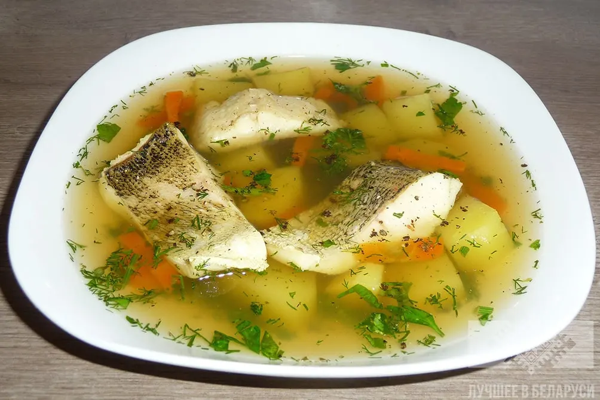

Меню
| Назва страви | Інгредієнти | Зображення | Ціна |
|---|---|---|---|
| Борщ | буряк, капуста, картопля, морква, цибуля, м’ясо, томат |  |
120 грн |
| Вареники | борошно, картопля, цибуля, вершкове масло |  | 100 грн |
| Галушки | борошно, яйця, сіль, сметана |  |
110 грн |
| Котлета по-київськи | куряче філе, вершкове масло, панірувальні сухарі, яйця |  |
150 грн |
| Салат Олів’є | картопля, морква, горошок, ковбаса, яйця, майонез | 90 грн | |
| Пампушки з часником | борошно, дріжджі, часник, олія |  | 70 грн |
| Деруни | картопля, цибуля, яйця, сметана | 85 грн | |
| Квасоля по-українськи | квасоля, морква, цибуля, олія, зелень | 95 грн | |
| Пиріг з м’ясом | борошно, м’ясо, цибуля, яйця, вершкове масло |  |
130 грн |
| Крученики | свинина, гриби, цибуля, спеції |  |
140 грн |
| Уха | риба, картопля, морква, цибуля, зелень |  | 125 грн |
| Компот | вишня, яблуко, груша, цукор |  |
50 грн |
Наші кухарі

Олег К.

Євген В.

Артем П.
Іван І.
Про нас
Ресторан "Смак" — це місце, де українська кулінарна традиція поєднується з сучасними гастрономічними тенденціями. Ми пропонуємо широкий вибір страв, приготованих з любов’ю та лише зі свіжих продуктів. Наші кухарі — справжні майстри своєї справи, які щодня працюють над тим, щоб кожна страва дарувала незабутні враження. Затишна атмосфера, привітний персонал і смачні наїдки — усе це чекає на вас у «Смаку».
Де ми знаходимося?
Ви знайдете нас за адресою: вул. Київська, 12, м. Київ, Україна
Залиште свій відгук:
Відгуки: